Hello
Content creator · Chinese social media marketer
Based in Guangzhou
用文字、视频与视觉讲述故事。
横跨品牌叙事与空间美学，正在往动态视觉延伸。
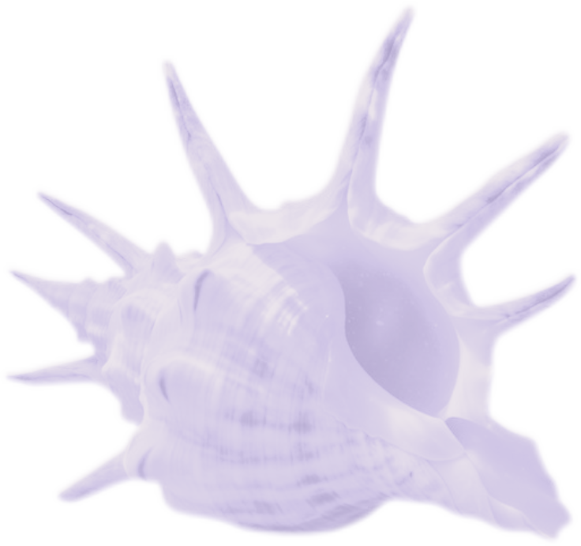
Work
品牌短视频、活动宣传片、AI创意视频
Brand films · Event promos · AI-generated
视觉传达、拼贴艺术、议题海报
Visual communication · Collage · Issue-based
品牌文案、策展推文、短视频脚本
Brand copy · Curatorial writing · Scripts
书店文创陈列、空间叙事、场景策划
Retail display · Spatial storytelling
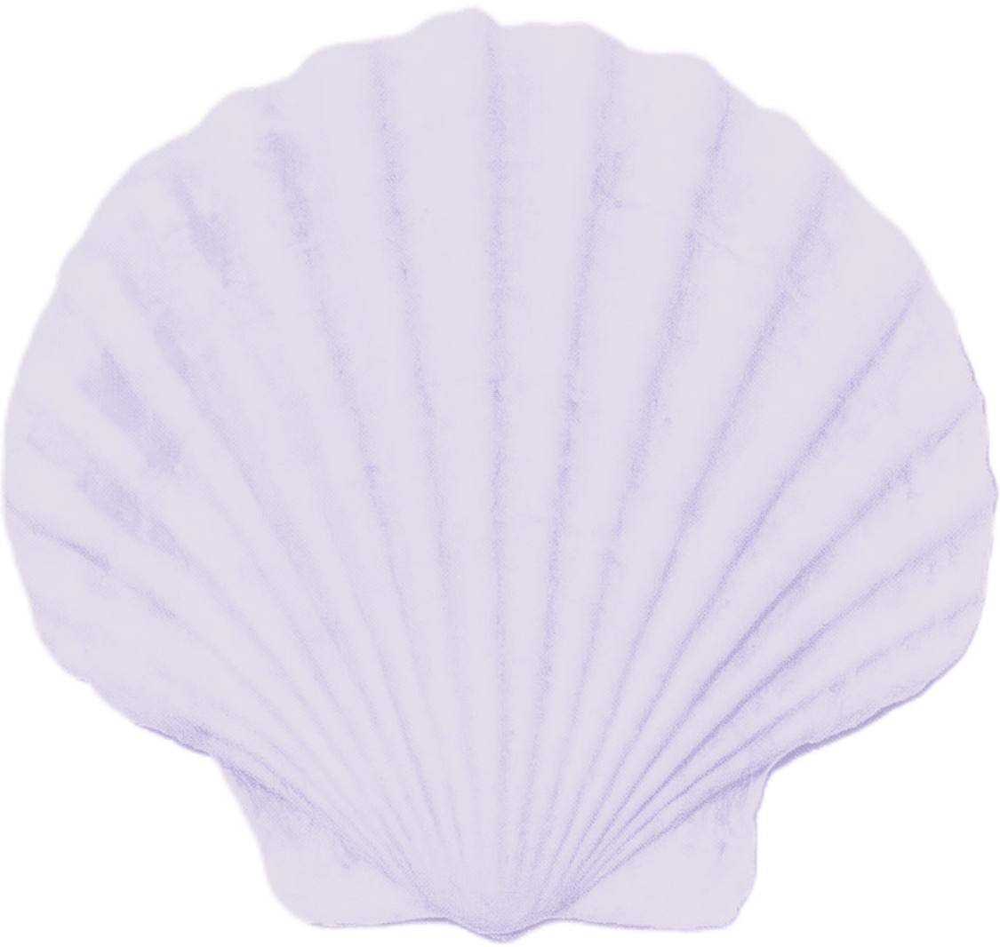
Journey
自由拍摄与剪辑，客户包含新的果汁、广州国际咖啡博览会、ECOFLEX。独自旅居清迈一个月，云南大理—沙溪—丽江—香格里拉—昆明一个月。
负责品牌话语体系建设，独立完成150+篇短视频脚本，管理视频号与抖音品牌矩阵，制定B端差异化内容策略，推动汉国置业在深圳与广州的项目落地。
负责「她设计奖」及「设计中国」的文案写作，包括推文、主持稿、宣传脚本、主题论坛。协助执行千人颁奖典礼，与获奖设计师及媒体对接协调。
负责书店文创区域的展台设计与陈列展示。
Introduction
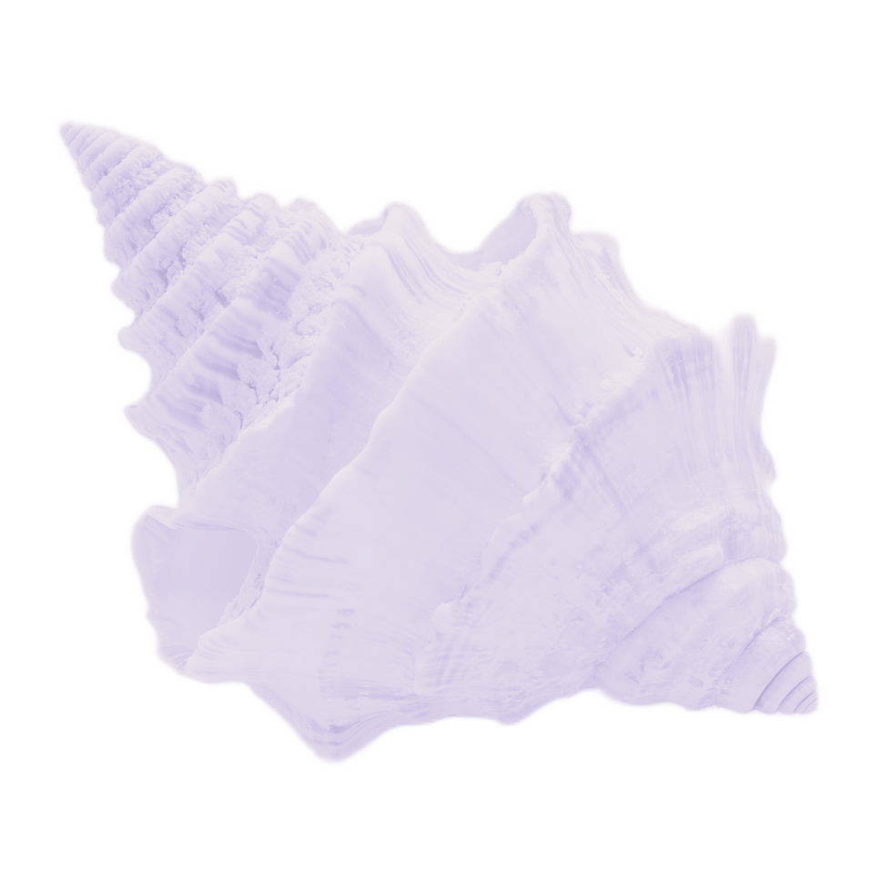
Things I make when I'm not working
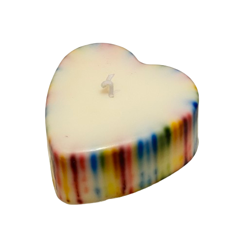
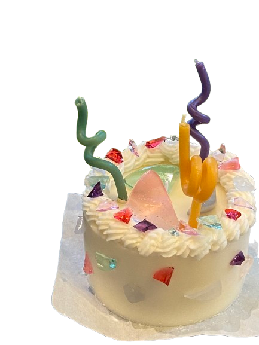
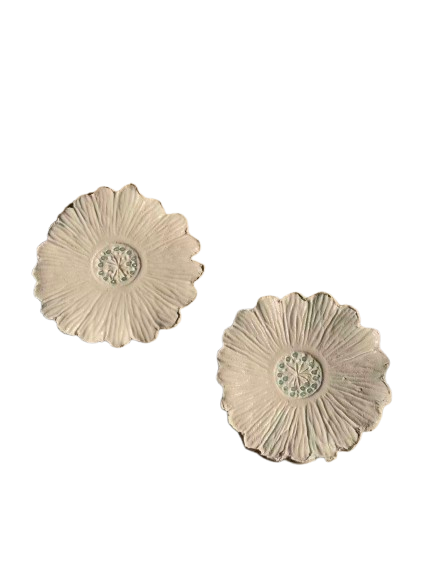
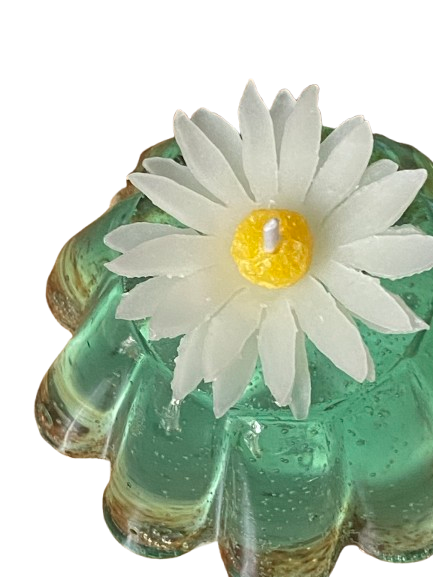
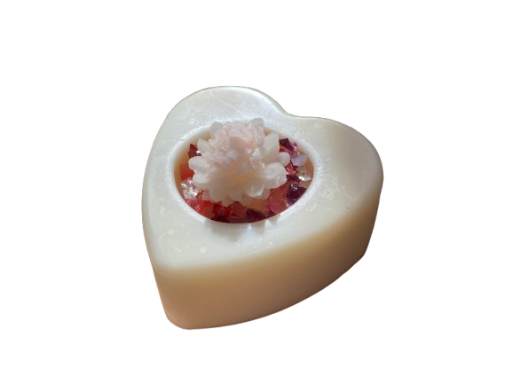
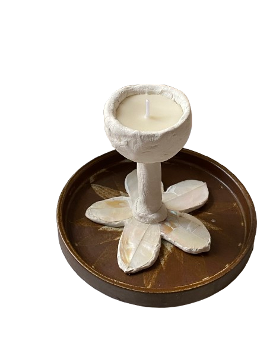
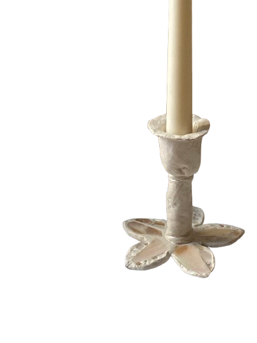
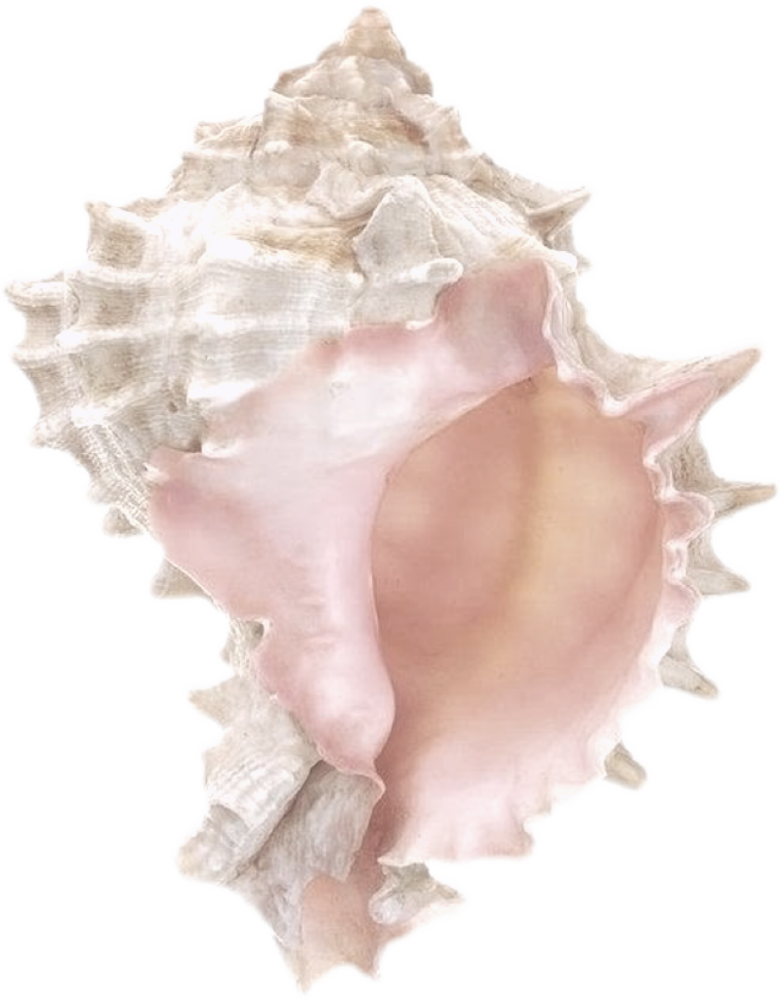